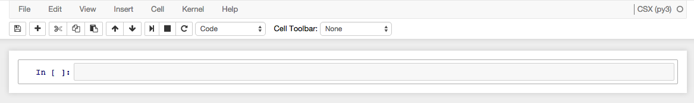

Data Analysis Quick Start¶
You can perform data analysis remotely, off-site, or at a beamline computer. Accordingly, there are two parts to this guide.
Option 1: At the Beamline¶
Log in to your controls account. If this is your first time, execute this command to add a line to your
.bashrcfile.:echo "export PATH=/opt/conda/bin:\$PATH" >> ~/.bashrc source ~/.bashrc
Activate the
analysisconda environment.:source activate analysisThis command makes the data collection software available by adding it your UNIX
$PATH.Start IPython.:
ipython
or, alternatively, IPython notebook:
ipython notebook
You are ready to work. See the dataportal documentation to look up scans and retrieve data. See the scikit-xray documentation for some Python tools for X-ray data analysis.
Option 2: Remotely¶
You need access to the BNL campus network, via a wired connection or VPN. You also need a controls account. (Contact one of the NSLS-II sysadmins.)
Go to https://notebook.nsls2.bnl.gov. Remember, if you are not connected to the campus network, that link will not work.
You will be shown a login prompt. Enter your controls account and password.

Choose a beamline from drop-down menu at the top right of the page.

This will open a new IPython notebook with all the software ready to use. It has fast access to the beamline’s data.

You are ready to work. See the dataportal documentation to look up scans and retrieve data. See the scikit-xray documentation for some Python tools for X-ray data analysis.